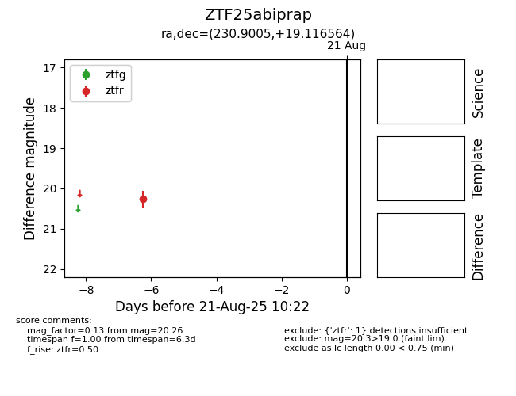

Target ZTF25abiprap at 2025-08-21 10:22, see:
FINK: fink-portal.org/ZTF25abiprap
Lasair: lasair-ztf.lsst.ac.uk/objects/ZTF25abiprap
ALeRCE: alerce.online/object/ZTF25abiprap
alt names
ZTF25abiprap (ztf,alerce)
coordinates:
equatorial (ra, dec) = (230.9005,+19.11656)
galactic (l, b) = (28.2336,+54.25301)
photometry
last ztfr=20.26
1 ztfr detections
